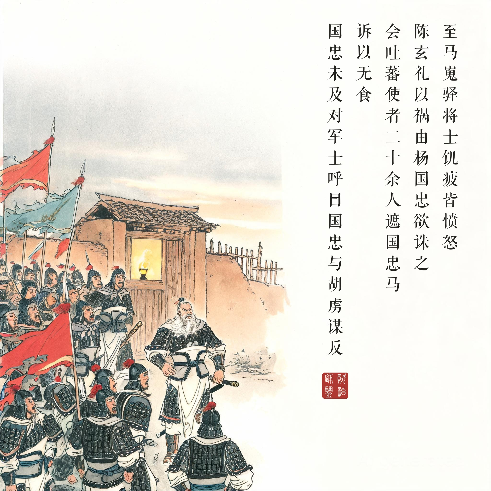
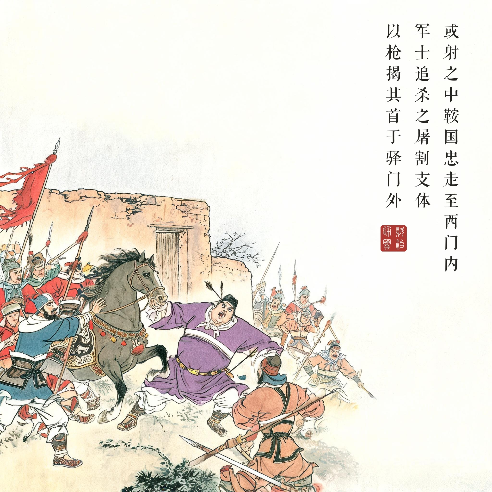
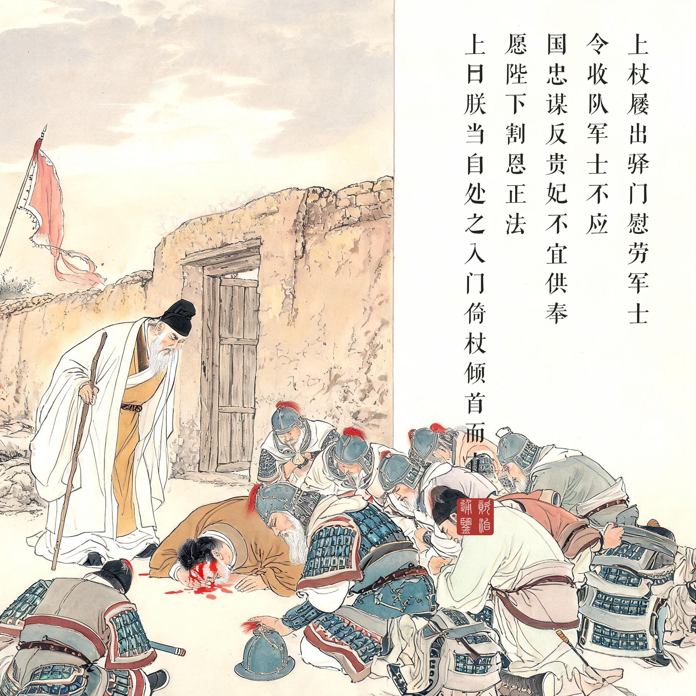
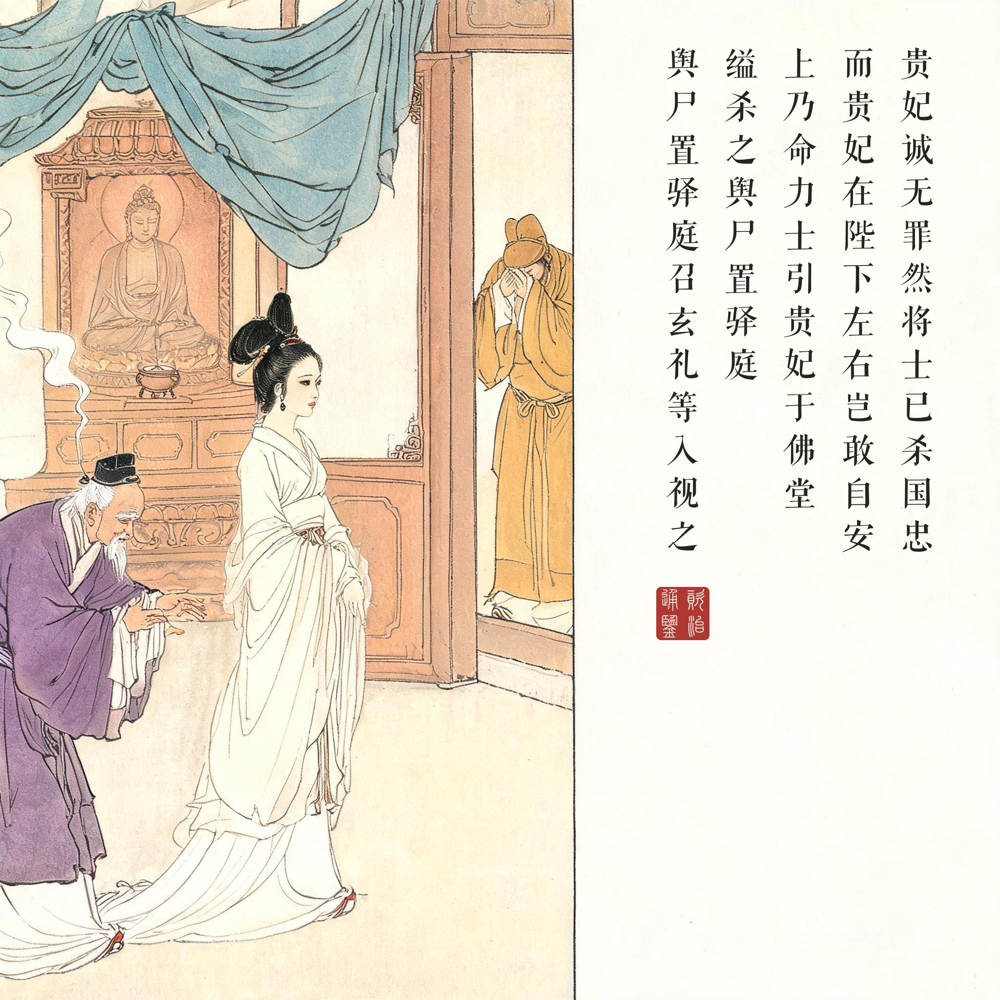
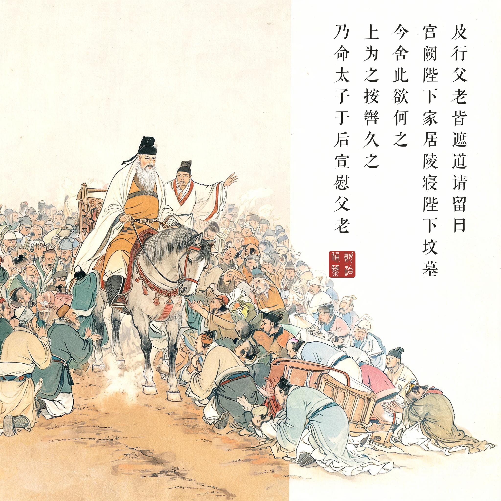

《资治通鉴 · 卷第二百一十八 · 唐纪三十四》肃宗文明武德大圣大宣孝皇帝上之下至德元年（公元 756 年）
（据 daizhigev20《资治通鉴》底本节录。前情：六月哥舒翰兵败灵宝，潼关失守）
丙申，至马嵬驿，将士饥疲，皆愤怒。陈玄礼以祸由杨国忠，欲诛之，因东宫宦者李辅国以告太子，太子未决。会吐蕃使者二十馀人遮国忠马，诉以无食，国忠未及对，军士呼曰：“国忠与胡虏谋反！”或射之，中鞍。国忠走至西门内，军士追杀之，屠割支体，以枪揭其首于驿门外，并杀其子户部侍郎暄及韩国、秦国夫人。御史大夫魏方进曰：“汝曹何敢害宰相！”众又杀之。韦见素闻乱而出，为乱兵所挝，脑血流地，众曰：“勿伤韦相公。”救之，得免。军士围驿，上闻喧哗，问外何事，左右以国忠反对。上杖屦出驿门，慰劳军士，令收队，军士不应。上使高力士问之，玄礼对曰：“国忠谋反，贵妃不宜供奉，愿陛下割恩正法。”上曰：“朕当自处之。”入门，倚杖倾首而立。久之，京兆司录韦谔前言曰：“今众怒难犯，安危在晷刻，愿陛下速决！”因叩头流血。上曰：“贵妃常居深宫，安知国忠反谋！”高力士曰：“贵妃诚无罪，然将士已杀国忠，而贵妃在陛下左右，岂敢自安！愿陛下审思之，将士安，则陛下安矣。”上乃命力士引贵妃于佛堂，缢杀之。舆尸置驿庭，召玄礼等入视之。玄礼等乃免胄释甲，顿首请罪，上慰劳之，令晓谕军士。玄礼等呼万岁，再拜而出，于是始整部伍为行计。
丙申日，御驾到马嵬驿，将士们又饿又累，都愤怒不平。陈玄礼认为祸患由杨国忠而起，想杀掉他，通过东宫宦官李辅国告知太子，太子没有决断。恰逢吐蕃使者二十多人拦住杨国忠的马，诉说没有吃的，杨国忠还没来得及回答，军士们大喊：“杨国忠与胡虏谋反！”有人放箭，射中马鞍。杨国忠逃到西门内，军士追上杀死，肢解了他的尸体，用长枪挑着他的头立在驿门外，同时杀了他的儿子户部侍郎杨暄和韩国夫人、秦国夫人。御史大夫魏方进说：“你们怎敢杀害宰相！”众人又杀了魏方进。韦见素闻变而出，被乱兵用棍棒打伤，脑血直流，众人说：“不要伤韦相公。”救了下来，得免一死。军士围住驿站，皇帝听到喧哗，问外面什么事，左右回答是杨国忠谋反。皇帝拄着手杖走出驿门，慰劳军士，命令收队，军士不理。皇帝派高力士去问，陈玄礼回答说：“杨国忠谋反，贵妃不宜再侍奉陛下，请陛下割恩爱，依法处置。”皇帝说：“朕自己处理。”进得门来，倚着手杖，低着头站在那里。过了很久，京兆司录韦谔上前说：“如今众怒难犯，安危就在片刻之间，请陛下快做决断！”磕头磕出了血。皇帝说：“贵妃常居深宫，哪知道杨国忠的谋反！”高力士说：“贵妃确实无罪，但将士已杀了国忠，贵妃还在陛下身边，将士们岂能安心！请陛下细想，将士安，陛下才安。”皇帝于是命高力士把贵妃引到佛堂，勒死了。尸体抬到驿站庭院，召陈玄礼等人进来查看。玄礼等这才脱下头盔、卸了铠甲，磕头请罪，皇帝慰劳他们，让他们向军士传达。玄礼等高呼万岁，再拜而出，这才开始整顿队伍准备启程。
一场由饥饿点火的政变。马嵬驿之变的底层逻辑不是忠奸，是粮——一夜急行军的禁军没吃上饭，怒火需要一个罪魁。杨国忠确实该死（他的确是安史之乱爆发的主要责任者之一），但他的死不是审判的结果，是情绪的结算：扣帽子（与胡虏谋反）→乱刀（屠割支体）→示众（枪揭其首）——程序全无，只有效率。司马光把这段写得又快又狠，几乎每个动词都在加速，直到驿门外那杆枪立定，事件才骤然换挡：从“兵杀相”转进到“兵逼君”。
倚杖倾首的七十一岁。全回最伟大的叙事是皇帝的沉默：杖屦出驿门无人应 →“朕当自处之”→ 入门倚杖倾首而立 → 韦谔叩头流血、高力士说完那句冷逻辑 → 终于“乃命”。《通鉴》在此没有写任何心理活动，全部用姿态：站、倚、垂首。中国文学史上描写“老年与丧失”最深刻的场景不在诗里，在史书的动词里。读画看第三幕：这格画面里没有贵妃没有兵，只有一个拄杖低首的老人——把它读成一幅肖像画，就懂了什么叫“天子守国门”的反面：天子连自己的女人都守不住。
佛堂与驿庭。高力士的话是本回的思想内核：“贵妃诚无罪……然将士已杀国忠，而贵妃在陛下左右，岂敢自安。”它把一场道德问题降维成了安全问题——正因为降维，它无解。“留全尸”的缢刑是这架权力机器最后的温柔。验尸一幕尤其冷峻：玄礼等人入视、免胄释甲、顿首请罪——一场兵变以一具尸体验明正身，然后瞬间恢复了君臣之礼。秩序回来得多快，人性死得就有多快。马嵬之后玄宗入蜀、太子北上，大唐的盛与衰在这条岔路口正式分手——下一回（雪夜入蔡州）要再等六十年，等一个姓李的将军替这个王朝找回一点主动权。